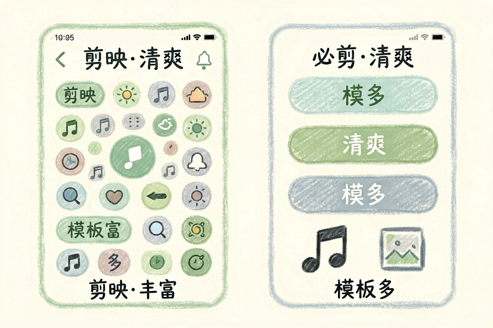
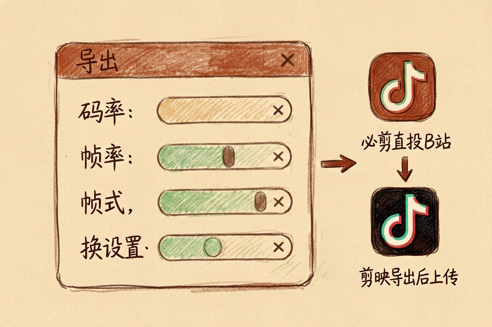

剪映和必剪哪个更适合 AI 剪辑？两者对比 — Learntide
先别急着比功能表，把最后要发布的平台想清楚，答案自然就收窄到一个了。
剪映和必剪哪个好：先看你往哪发
剪映和必剪哪个好，先问一句：你的片子最后发在哪。这一条基本能定下八成的选择。
必剪是 B 站出的，和站内投稿贴得最紧。剪映背靠抖音，模板和玩法跟着短视频热点走，AI 功能也堆得更多。
想做几分钟以上的横屏内容，必剪更顺手。做竖屏短视频、要蹭热门模板，剪映省事。
AI 剪辑功能谁更全
这块剪映领先明显。自动字幕、语音转文字、文本成片、智能抠像、AI 配音，常用的基本都有，更新也快。
必剪的 AI 功能偏克制，字幕识别、一键三连式的模板处理是主力，花哨的少。好处是不容易被复杂界面绕晕。
字幕识别两边都够用。差别在后续编辑：剪映能按文本删片段，改稿子等于改视频，这个功能对口播类内容效率提升很大。
口播视频快速成片流程（剪映）
1. 导入素材 → 识别字幕 → 勾选「标记无效片段」
2. 打开文本模式，直接删掉说错的句子，视频同步裁掉
3. 字幕批量改样式：字号 8、描边 1、位置下移到安全区
4. 音频 → 人声增强，响度统一到 -14 LUFS
5. 导出前关掉「智能补帧」，口播用不上，只会拖慢渲染必剪也能做类似的事，只是步骤更手动，得自己切。
还有个区别在协作。剪映的云草稿方便多设备接力，手机拍完回电脑接着剪。必剪这块弱一些，跨设备主要靠手动导。
上手难度和素材库
新手第一次打开，必剪更不容易慌。功能少，按钮大，主线清楚。
剪映的界面塞得满，第一次用容易在几十个入口里迷路。熟了之后效率反超，但前两天有点难受。
素材和音乐库剪映更大，热门 BGM 跟得快。必剪的曲库偏小，但版权风险相对可控，投 B 站不容易被打回。
模板是剪映的杀手锏。套一个模板，换掉素材，五分钟出片。想要原创感就别用，一眼能看出是模板。
导出、水印和平台适配

两边导出都能去水印，前提是别用带片尾的模板。片尾那几秒是默认加上的，记得手动删。
必剪对 B 站的适配更细：分区、封面尺寸、投稿参数都对得上，还能直接投稿。剪映导出后要自己上传。
画质参数剪映给得更细，码率、帧率、格式都能调。做长视频这点有用。
还有一点常被忽略：必剪没有那么多付费解锁的入口，剪映的部分高级特效和素材要开会员。做得越花，成本越容易上去。
手机和电脑端的功能不对等，两家都有这个问题。复杂工程还是回电脑做。
怎么选：别指望一个软件通吃

发抖音、快手、视频号，做竖屏和模板化内容，剪映。发 B 站，做横屏中长视频，必剪。
两个都装也没什么成本。粗剪在剪映用 AI 快速处理，成品拿到必剪调格式再投稿，这种混用很常见。
别被功能数量绑架。你真正天天用的，可能就是字幕、调速、加音乐这三样。剪映和必剪哪个好，取决于你的发布平台和内容长度，不看功能清单谁更长。
本文信息核对于 2026-08-08。AI 产品的价格、免费额度与功能变动频繁，实际以各工具官网当前说明为准。